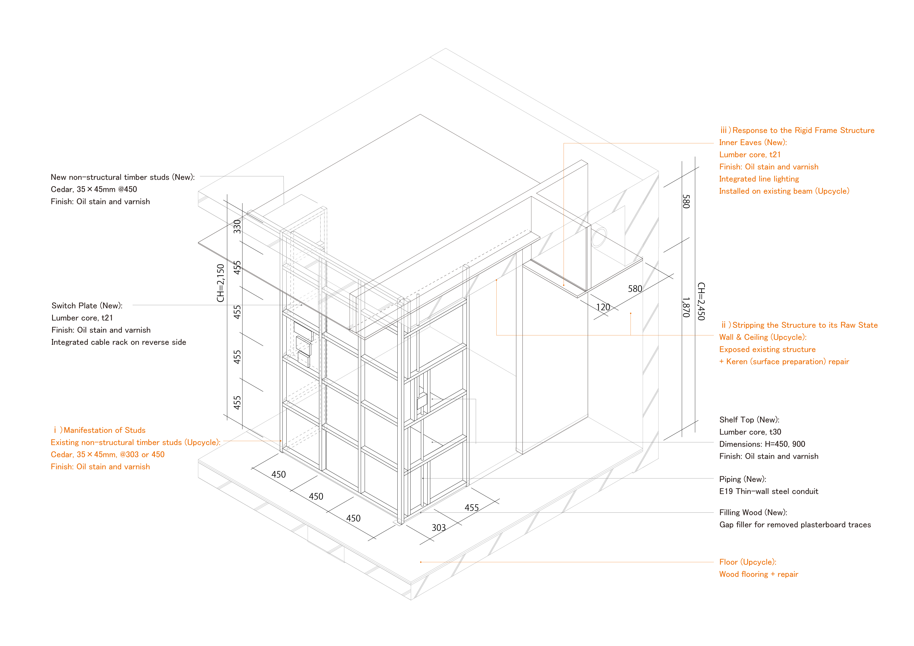
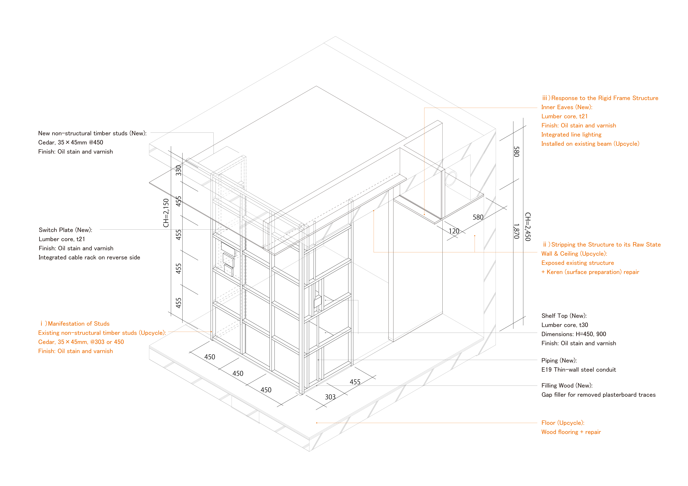

Works


.jpg) 


日本のマンション建築がバブルの波に乗って急増した1980年代から40年以上が経過し、市場に流通する中古マンションの経年化は顕著に進んでいる。新規登録された首都圏中古マンションの平均築年数は、2019年の25.84年から2024年には30.22年となり今後は更に上昇する見込みである。こうした膨大なストックに対し、現在は新しい＝良いという画一的な価値観や、表層をなぞるだけの短絡的なリノベーションが主流となっているように思える。
本計画は、上記を背景とした日本の標準的な分譲マンションに対し、本来備えていた価値を再発見し、再構成する試みである。
ここでいう”Ordinary＝ふつう”とは、単なる平均値や無難さではなく、日常の中で違和感なく共有され、意識されることなく成立している「感覚的な輪郭（＊1）」である。無自覚な行為の背後で静かに機能し、特定の用途や価値観に回収されない汎用性を内包するものとして定義する。
設計においては付加的な造形や新しさを追求するのではなく、既存の間取りや下地、素材が本来備えていた合理性と匿名性を読み解くことから始めた。従来のフルスケルトン化による全面更新ではなく、既存要素に新たな意味を付与するアップサイクルとして、三つの操作を行っている。
ⅰ）間柱の顕在化
既存壁の石膏ボードを撤去し、現れた木製の間柱を空間の骨格として留めた。1990年代以降の主流となったLGS（軽量鉄骨）は中空の薄肉材であり機能付加には別途補強を要するが、この時代特有の木製間柱は、303mmまたは455mmの日本的な尺貫法を厳格に保持した密実な構造体である。これらを壁の下地という隠蔽された役割から解放し、棚板やテーブル天板を直接支持する方立として、あるいはスイッチ類を集約するボードの支持材として、生活機能を直接的に担うデバイスへと転換した。また用途間を緩やかに分節する「線材」としての質感は、障子や格子、竿縁等が持つ日本的な境界概念を、現代のマンション構法において再解釈したものである。
ⅱ）躯体の素地化
日本のRC造マンションは、仕上げで隠蔽される前提であっても極めて高い施工精度を持つ。本計画では、壁紙やタイルを剥離した後の下地調整（ケレン）を、単なる塗装前の補修工程ではなく、空間の最終的なテクスチャとして丁寧に仕上げてもらった。この配慮は古くから大工文化として浸透している日本独自の丁寧さ・誠実さの現れであり、躯体そのものを「日本のマンションにおける固有の仕上げ」として位置づける。
ⅲ）ラーメン構造への応答
古いマンション特有である露出する大きな梁型は、構造体そのものやダクト経路の混在によって生じ、従来空間を圧迫する隠すべき阻害要素として扱われてきた。本計画では梁下に「内庇」を設け、間接照明を仕込むことで、梁と天井を照らす装置へと読み替えた。これにより、構造体的制約が空間に視覚的な奥行きを与える要素へと転換されている。
これらの操作により、単なる和やレトロといった表層的な意匠に終始しない、マンション特有のスケールと空間的な層が重なり合う質を獲得した。今回は旧台所や旧和室を中心に（ⅰ）の手法を適用したが、この操作は他の部位にも展開可能な「型」としての汎用性を持っており、既存条件に応じた多様な“ふつう”を再構成する手がかりとなる。また、この部分的な更新を積み重ねるアップサイクルの手法は、解体廃棄物を標準的なフルリノベーションの半分以下に抑制し、環境負荷の低減にも直結している。
「新しくすること」を目的化せず、“ふつう”を突き詰めることで変えなくてよいものを見極める。その設計態度は、現代の不動産市場においても十分に機能し得ることを示しており（＊2）、膨大な既存ストックに対する誠実な建築的価値を提示するものである。
＊１：深澤直人『ふつう』参照
＊２：本物件は諸事情により売却物件として市場に提示され、短期間で次の住まい手へと引き継がれた。
More than forty years have passed since the 1980s, a period when Japanese condominium (mansion) construction surged on the wave of the economic bubble. Consequently, the aging of the existing housing stock in the market is progressing significantly. The average age of newly registered pre-owned condominiums in the Tokyo metropolitan area has risen from 25.84 years in 2019 to 30.22 years in 2024, a trend expected to continue. In response to this vast stock, current mainstream values remain monolithic—equating "new" with "good"—or settle for superficial renovations that merely skim the surface.
Against this backdrop, this project is an attempt to rediscover and reconfigure the inherent value within the standard Japanese condominium. The term "Ordinary" as used here does not refer to a mere statistical average or a sense of safety; rather, it defines the "sensory contours (1)" that are shared without dissonance in daily life and exist without being consciously noticed. It is defined as something that functions quietly behind unconscious actions, possessing a versatility that cannot be reduced to specific uses or values.
Rather than pursuing additive forms or novelty, the design began by decoding the rationality and anonymity inherent in the existing floor plans, substrates, and materials. Eschewing the conventional approach of "full-skeleton" total renewal, the project employs three operations as a form of upcycling, assigning new meanings to existing elements.
ⅰ）Manifestation of Studs
The gypsum boards of the existing walls were removed, and the revealed wooden studs were retained as the skeletal framework of the space. While the Light Gauge Steel (LGS) that became mainstream after the 1990s consists of thin-walled hollow members requiring additional reinforcement for functionality, the wooden studs characteristic of this era are solid structural members that strictly adhere to the traditional Japanese Shaku-kan-ho module (303mm or 455mm). By liberating these from their hidden role as wall substrates, they were transformed into devices that directly support daily functions—serving as mullions to support shelves and tabletops, or as mounting bases for switches. Furthermore, their texture as "linear elements" that gently demarcate functions is a reinterpretation of Japanese spatial boundaries—such as shoji, lattices, and saobuchi—within the context of modern condominium construction.
ⅱ）Stripping the Structure to its Raw State
Japanese reinforced concrete (RC) condominiums possess extremely high construction precision, even when intended to be concealed by finishes. In this project, the surface preparation (keren) after stripping away wallpaper and tiles was treated not as a mere repair step before painting, but as the final texture of the space, finished with meticulous care. This attention to detail is an expression of the unique Japanese diligence and integrity rooted in carpentry culture. The structure itself is positioned as an "indigenous finish" inherent to the Japanese condominium.
ⅲ）Response to the Rigid Frame Structure
The large, exposed beams typical of older condominiums—arising from the structural system and a confluence of duct routes—have traditionally been treated as oppressive obstacles to be hidden. In this plan, "internal eaves" were installed beneath the beams, integrating indirect lighting to redefine them as devices that illuminate both the beams and the ceiling. Consequently, structural constraints are transformed into elements that provide visual depth to the space.
Through these operations, the space acquired a quality where the specific scale and spatial layers of the condominium overlap, transcending superficial aesthetics like "Wa" (Japanese style) or retro nostalgia. While this method was primarily applied to the former kitchen and washitsu (Japanese-style room) in this instance, it possesses the versatility of a "form" (kata) that can be expanded to other areas, providing a clue for reconfiguring diverse "ordinaries" based on existing conditions. Furthermore, this upcycling approach of accumulating partial updates reduced demolition waste to less than half of a standard full renovation, directly contributing to a lower environmental footprint.
By not making "renewal" the end goal, but rather scrutinizing the "ordinary" to identify what does not need to change, this design attitude demonstrates its viability even within the contemporary real estate market (2). It presents a sincere architectural value in response to the vast existing housing stock.
Notes: *1: Referencing Naoto Fukasawa’s concept of "Ordinary." 2: Due to various circumstances, this property was placed on the market as a for-sale unit and was passed on to the next inhabitant within a short period.
About & Contact
Completed the Master's Program in Human-Environment Studies, Department of Environmental Design, Kyushu University.
Currently working at an architectural design firm.